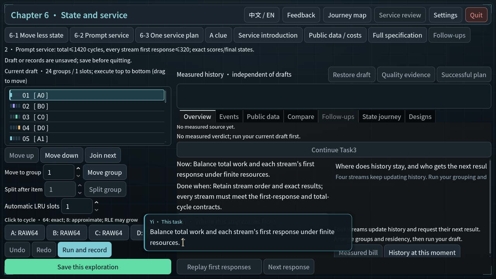
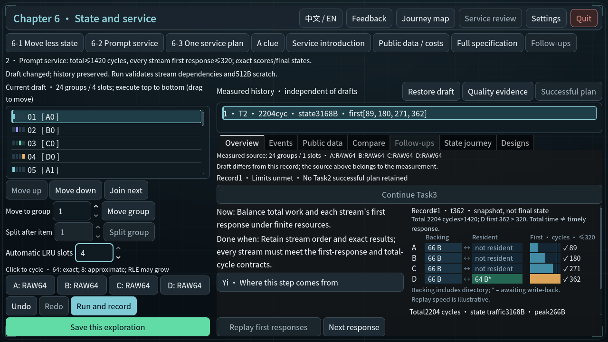
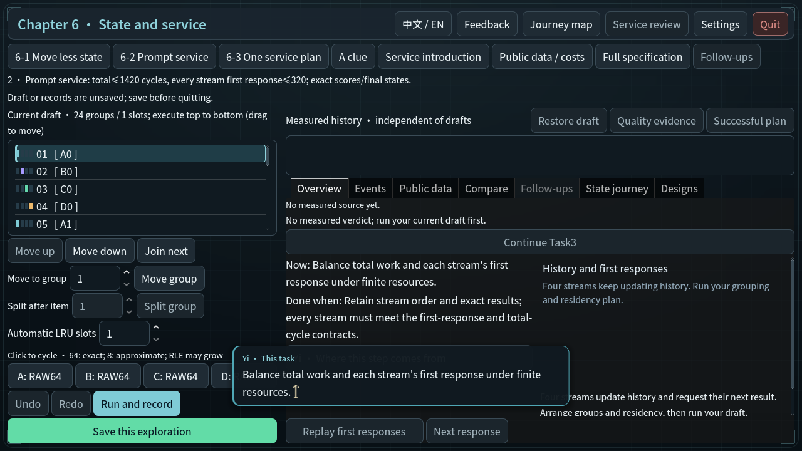
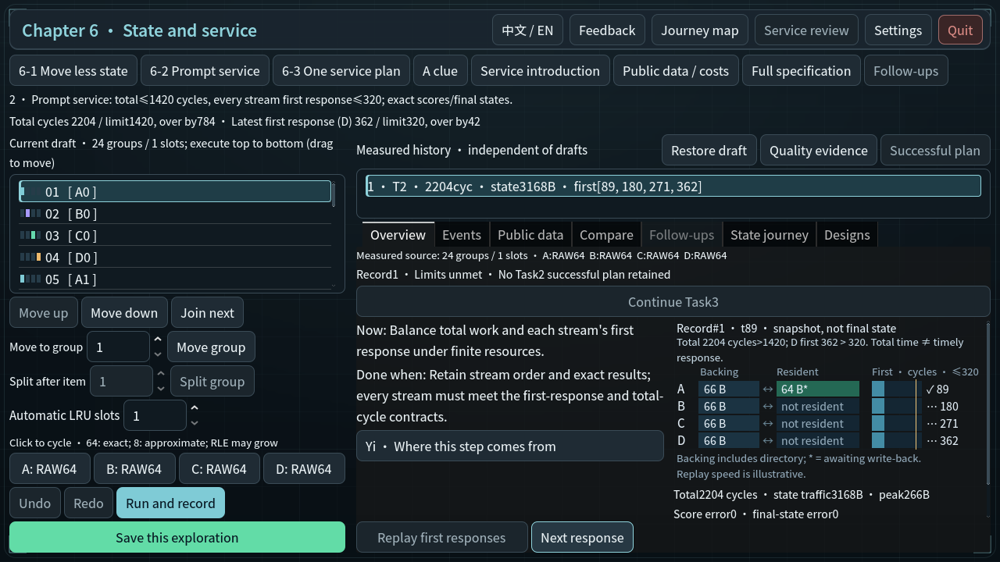
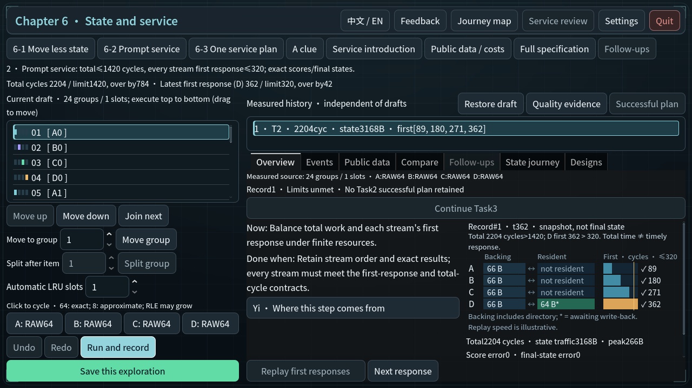
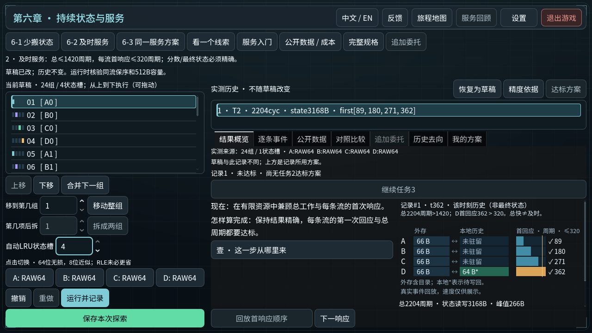
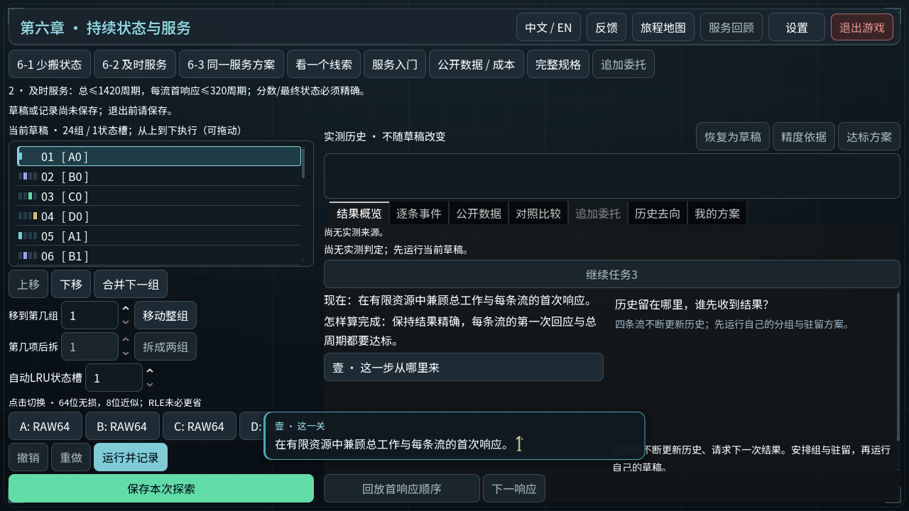
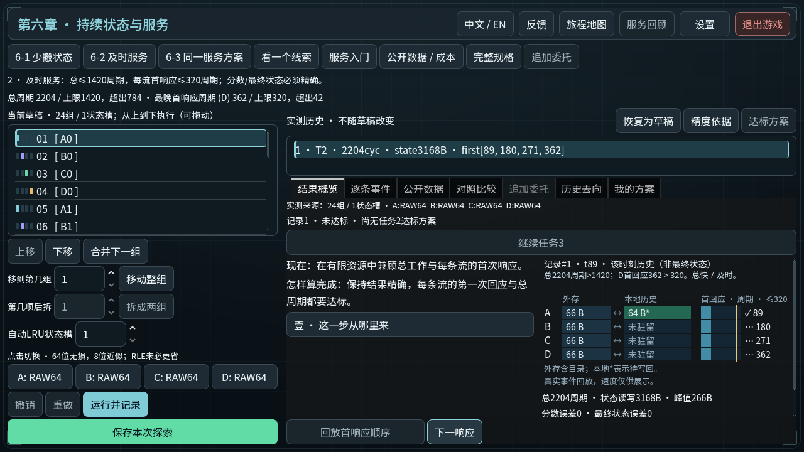
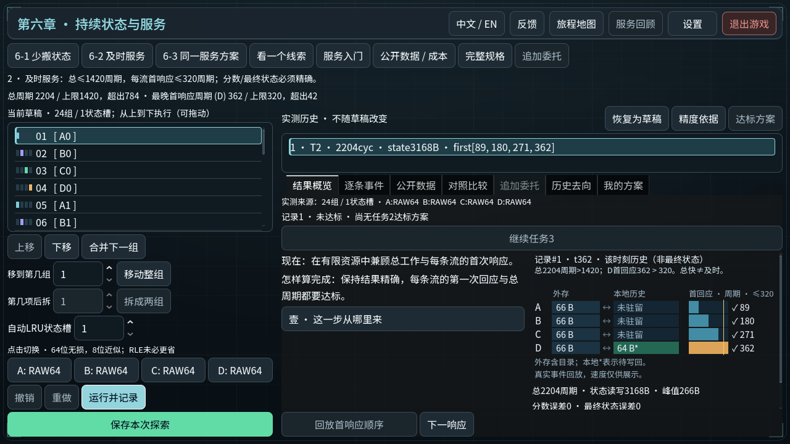

服务回放说明
Godot真实运行与Viewport事件；不代表原生输入或新玩家理解验收。
before-en-service-entry
before-en-service-late-first-response en-journey-draft-keeps-record
en-journey-draft-keeps-record
en-journey-entry
en-journey-first-a
en-journey-late-response
zh_CN-journey-draft-keeps-record
zh_CN-journey-entry
zh_CN-journey-first-a
zh_CN-journey-late-response